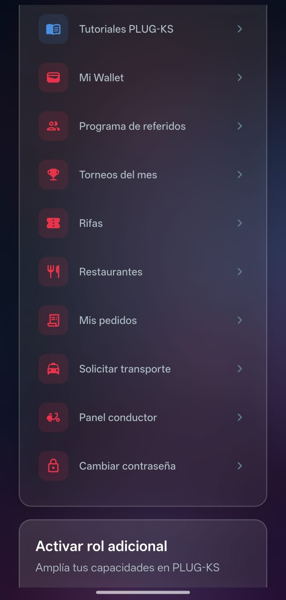
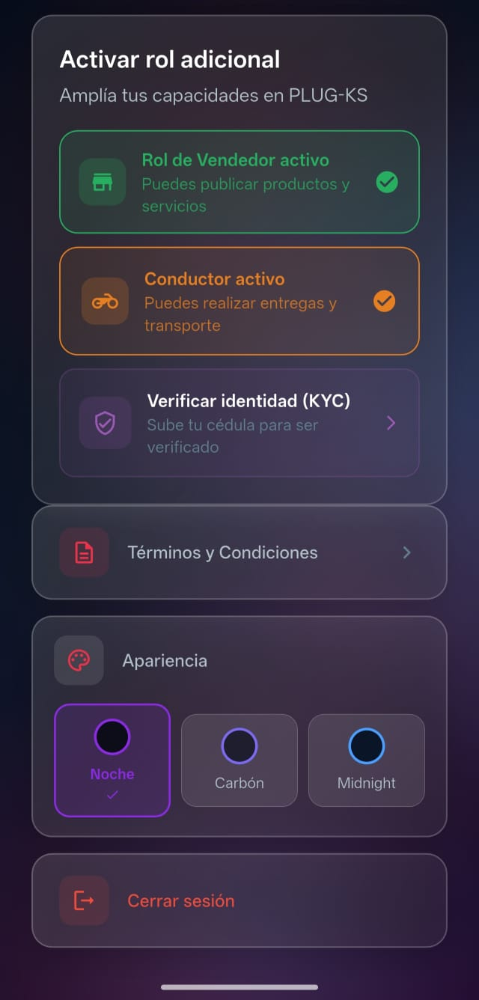

Por defecto todos los usuarios entran como compradores. Para publicar artículos primero debes solicitar el rol de vendedor y esperar la aprobación del equipo PLUG-KS.
⚠️ Importante: Sin el rol vendedor activo, el botón "+" aparece gris y no podrás publicar. ¡Este paso es obligatorio!

Menú de opciones en Perfil

Rol vendedor y conductor activos ✅
Paso a paso 👣
1
Ve a tu Perfil
Toca el ícono de persona 👤 en la barra de navegación inferior.
2
Busca "Activar rol adicional"
Desplázate por el menú del perfil hasta encontrar esta opción.
3
Selecciona "Vendedor"
Elige el rol que deseas solicitar y confirma la solicitud.
4
Espera la aprobación ⏳
El equipo PLUG-KS revisará tu solicitud. Recibirás una notificación cuando sea aprobada.
5
¡El "+" se activa en rojo! 🔴
Una vez aprobado, el botón "+" en la pantalla de inicio se vuelve rojo y ya puedes publicar.
💡 Tip: También puedes solicitar el rol de Conductor desde este mismo menú si quieres ofrecer servicios de transporte o domicilios en Corozal.